近 7 天 · 股票：一根 15 分 K 同時站上 7 / 14 / 25 / 99 / 120（優化過濾）
前一根收盤完全在這五條均線下方，這一根收盤同時站上。不必過 MA200。進場用訊號下一根開盤。 掃描幣安 股票永續（美/港/韓/中，不含加密與商品）近 7 天、233 個合約。訊號區間 11-16 → 11-23（GMT+8）。產生於 2026-11-23 21:50。 圖例每筆上面是 15 分，底下是同一時間的 1 小時圖。圖上的 MA200 只是對照。僅供型態對照，不是進出場建議。
圖例
僅顯示優化過關訊號（站上 MA200 + 前 24h 漲 + 寬度 ≤ 1% + 上影 ≤ 25% + 同幣雙向 8h 冷卻）；黃虛線為訊號 15 分與對應 1 小時 K。
HK0700 11-23 11:00 · 4h +2.10%
15 分圖 · 黃虛線是同時站上 7/14/25/99/120 的那根（圖上 MA200 只是對照）
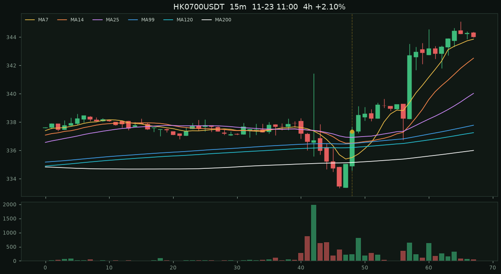
1 小時圖 · 黃虛線是上面那根 15 分所在的小時 K
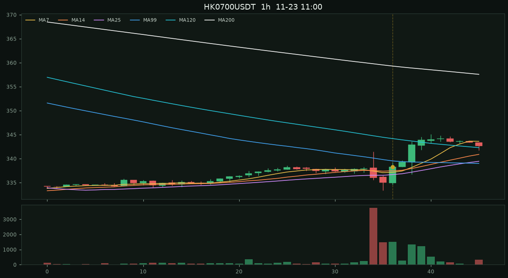
MA200上方 · 前24h +0.2% · 上影 11% · 寬度 0.459% · 量比 0.78× · 15m / 1h / 4h / 8h：+0.34% / +0.55% / +2.10% / +1.84% · 實體穿越
TENCENT 11-23 11:00 · 4h +2.09%
15 分圖 · 黃虛線是同時站上 7/14/25/99/120 的那根（圖上 MA200 只是對照）
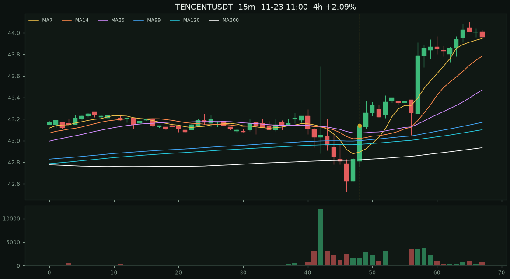
1 小時圖 · 黃虛線是上面那根 15 分所在的小時 K
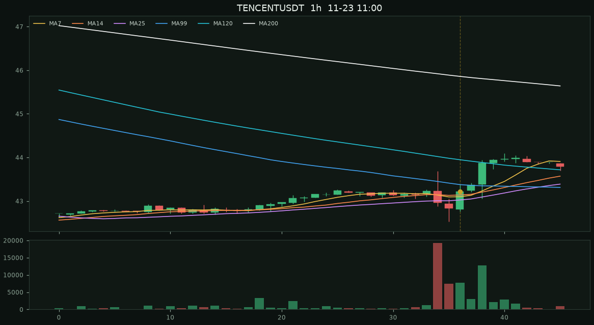
MA200上方 · 前24h +0.2% · 上影 5% · 寬度 0.454% · 量比 1.00× · 15m / 1h / 4h / 8h：+0.30% / +0.53% / +2.09% / +1.74% · 實體穿越
TER 11-23 11:00 · 4h +1.53%
15 分圖 · 黃虛線是同時站上 7/14/25/99/120 的那根（圖上 MA200 只是對照）
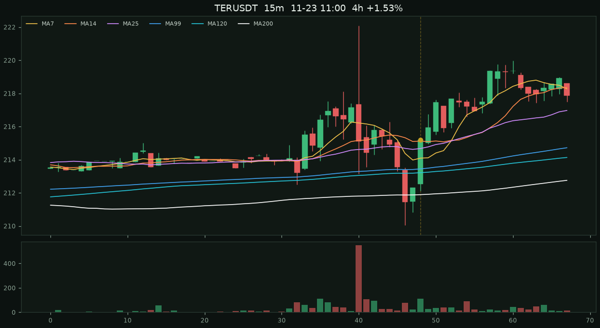
1 小時圖 · 黃虛線是上面那根 15 分所在的小時 K
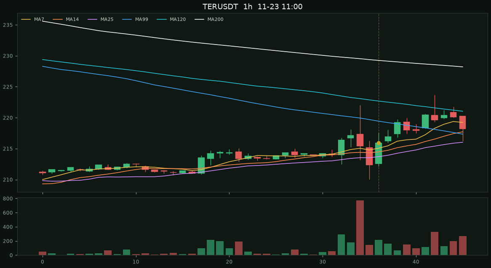
MA200上方 · 前24h +0.3% · 上影 0% · 寬度 0.897% · 量比 1.45× · 15m / 1h / 4h / 8h：+0.43% / +1.23% / +1.53% / +2.55% · 實體穿越
AMAT 11-23 11:00 · 4h +0.93%
15 分圖 · 黃虛線是同時站上 7/14/25/99/120 的那根（圖上 MA200 只是對照）
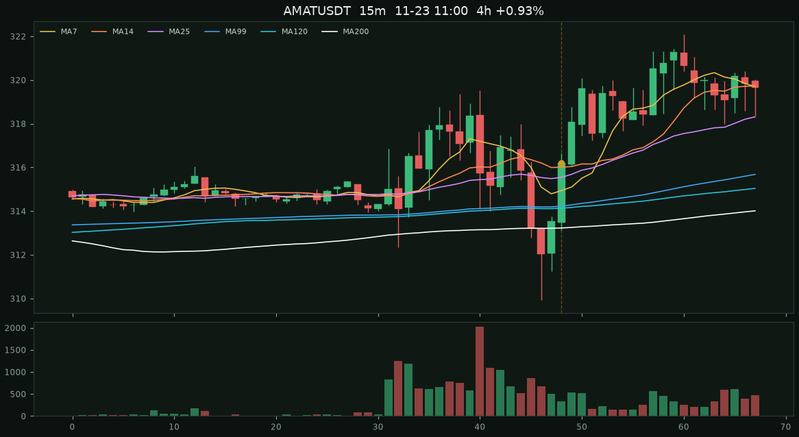
1 小時圖 · 黃虛線是上面那根 15 分所在的小時 K
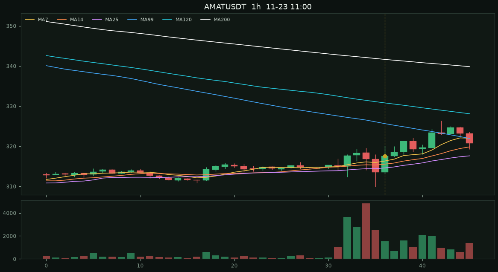
MA200上方 · 前24h +0.3% · 上影 12% · 寬度 0.599% · 量比 0.45× · 15m / 1h / 4h / 8h：+0.61% / +1.02% / +0.93% / +2.24% · 實體穿越
SHAZ 11-23 11:00 · 4h +0.73%
15 分圖 · 黃虛線是同時站上 7/14/25/99/120 的那根（圖上 MA200 只是對照）
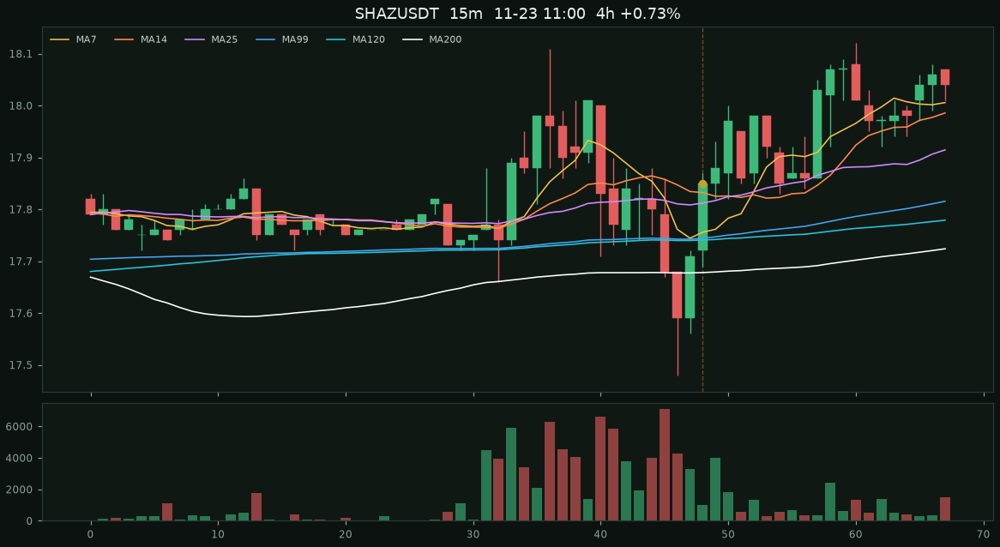
1 小時圖 · 黃虛線是上面那根 15 分所在的小時 K
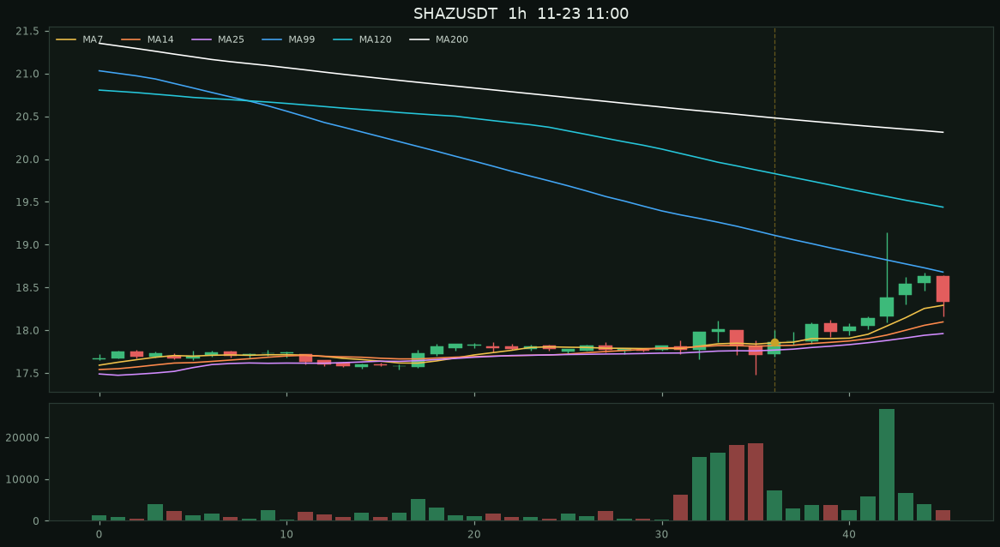
MA200上方 · 前24h +0.5% · 上影 11% · 寬度 0.532% · 量比 0.27× · 15m / 1h / 4h / 8h：+0.17% / +0.73% / +0.73% / +3.70% · 實體穿越
SPCX 11-23 11:00 · 4h +0.67%
15 分圖 · 黃虛線是同時站上 7/14/25/99/120 的那根（圖上 MA200 只是對照）

1 小時圖 · 黃虛線是上面那根 15 分所在的小時 K

MA200上方 · 前24h +0.1% · 上影 0% · 寬度 0.298% · 量比 1.44× · 15m / 1h / 4h / 8h：+0.34% / +0.52% / +0.67% / +0.34% · 實體穿越
NOK 11-23 11:00 · 4h +0.48%
15 分圖 · 黃虛線是同時站上 7/14/25/99/120 的那根（圖上 MA200 只是對照）
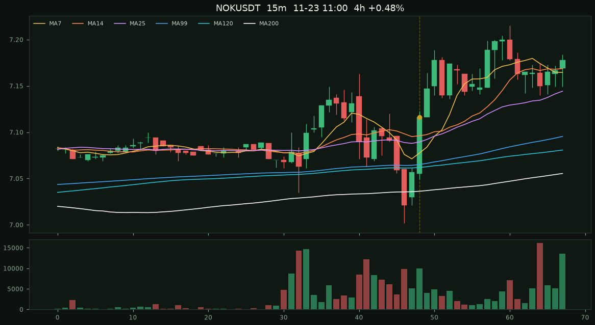
1 小時圖 · 黃虛線是上面那根 15 分所在的小時 K
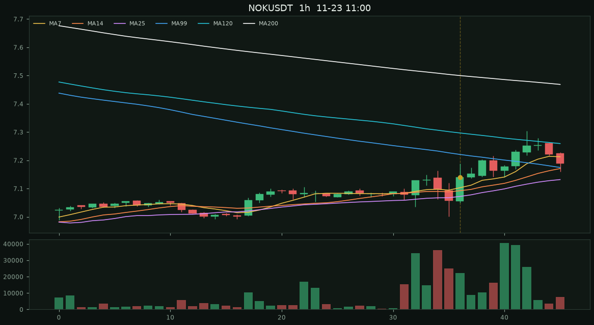
MA200上方 · 前24h +0.5% · 上影 9% · 寬度 0.480% · 量比 1.48× · 15m / 1h / 4h / 8h：+0.44% / +0.82% / +0.48% / +1.71% · 實體穿越
COIN 11-16 23:45 · 4h +0.42%
15 分圖 · 黃虛線是同時站上 7/14/25/99/120 的那根（圖上 MA200 只是對照）
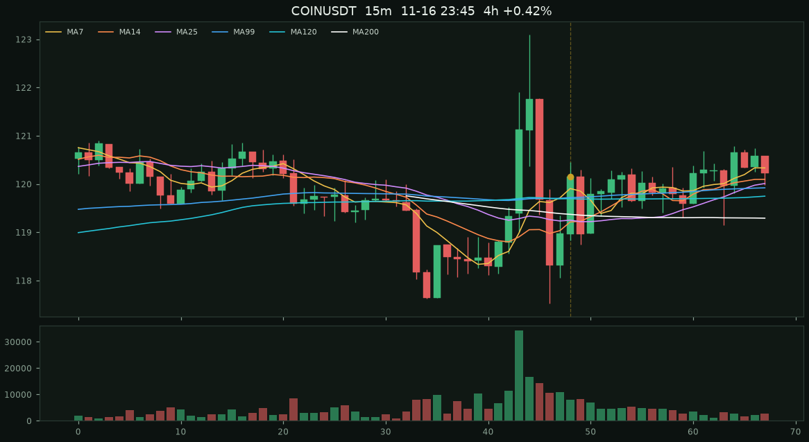
1 小時圖 · 黃虛線是上面那根 15 分所在的小時 K
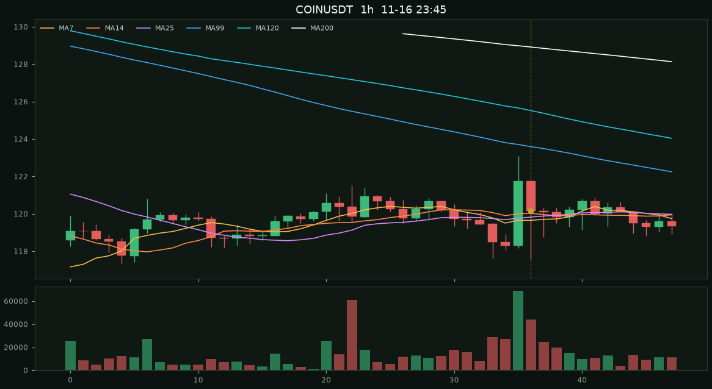
MA200上方 · 前24h +0.3% · 上影 19% · 寬度 0.571% · 量比 0.89× · 15m / 1h / 4h / 8h：-1.00% / -0.05% / +0.42% / -0.54% · 實體穿越
MRK 11-22 08:00 · 4h -0.14%
15 分圖 · 黃虛線是同時站上 7/14/25/99/120 的那根（圖上 MA200 只是對照）
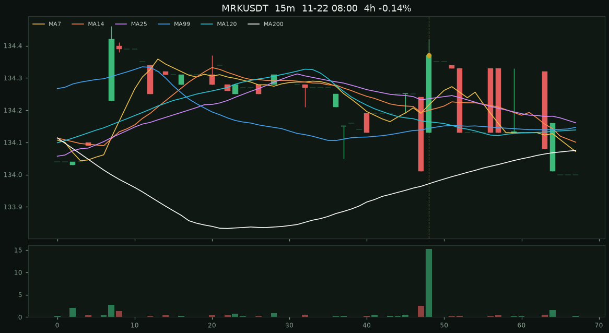
1 小時圖 · 黃虛線是上面那根 15 分所在的小時 K
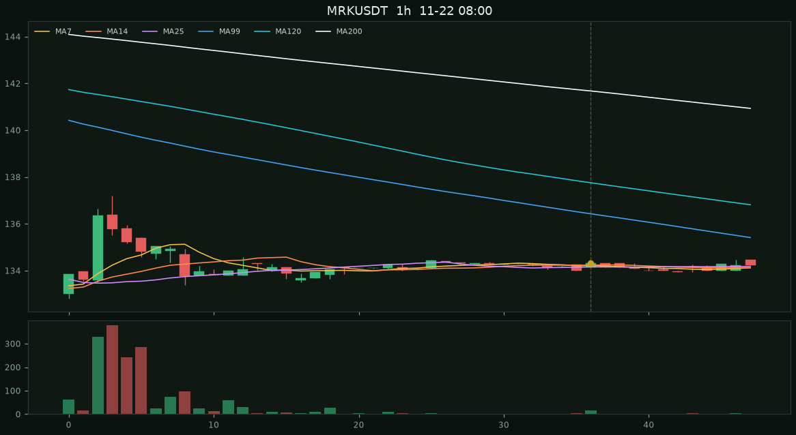
MA200上方 · 前24h +0.0% · 上影 17% · 寬度 0.070% · 量比 14.79× · 15m / 1h / 4h / 8h：+0.00% / -0.16% / -0.14% / -0.25% · 實體穿越
CSCO 11-16 22:15 · 4h -0.32%
15 分圖 · 黃虛線是同時站上 7/14/25/99/120 的那根（圖上 MA200 只是對照）
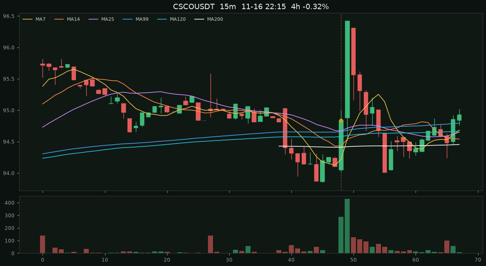
1 小時圖 · 黃虛線是上面那根 15 分所在的小時 K
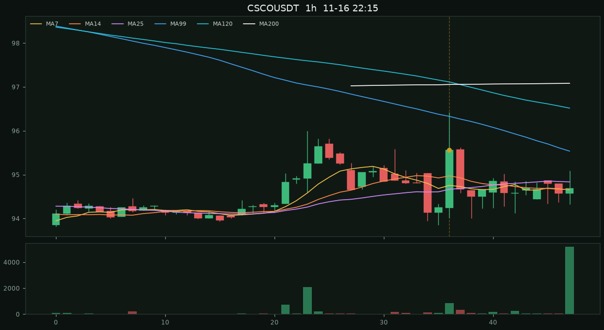
MA200上方 · 前24h +0.0% · 上影 16% · 寬度 0.588% · 量比 8.68× · 15m / 1h / 4h / 8h：+1.62% / +0.05% / -0.32% / -0.26% · 實體穿越
DIS 11-17 05:15 · 4h -0.33%
15 分圖 · 黃虛線是同時站上 7/14/25/99/120 的那根（圖上 MA200 只是對照）
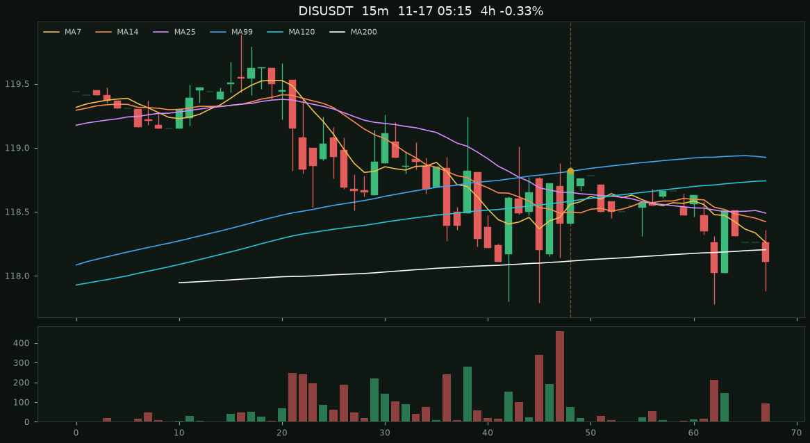
1 小時圖 · 黃虛線是上面那根 15 分所在的小時 K
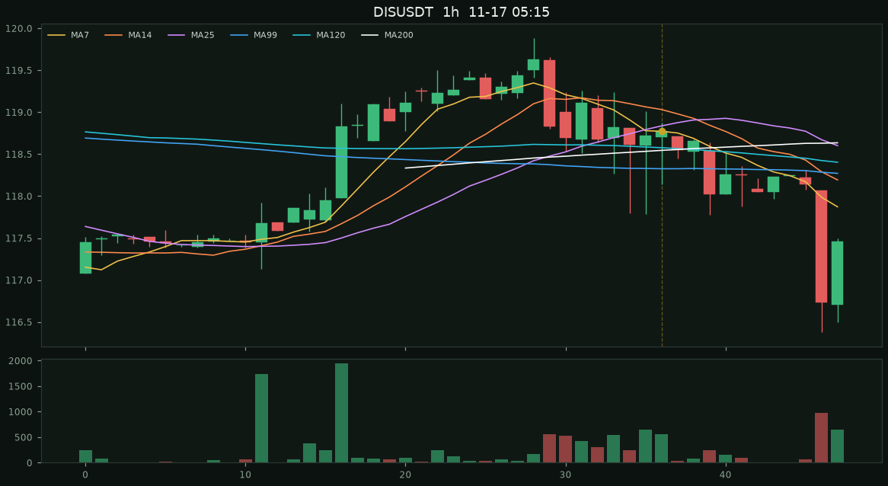
MA200上方 · 前24h +0.7% · 上影 0% · 寬度 0.295% · 量比 0.58× · 15m / 1h / 4h / 8h：+0.05% / -0.17% / -0.33% / -0.38% · 實體穿越
COST 11-16 23:15 · 4h -0.40%
15 分圖 · 黃虛線是同時站上 7/14/25/99/120 的那根（圖上 MA200 只是對照）
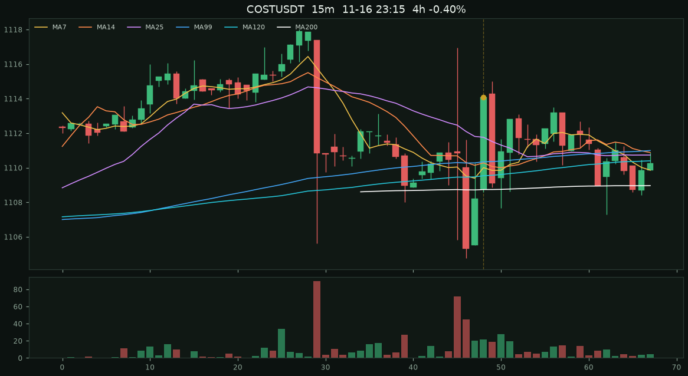
1 小時圖 · 黃虛線是上面那根 15 分所在的小時 K
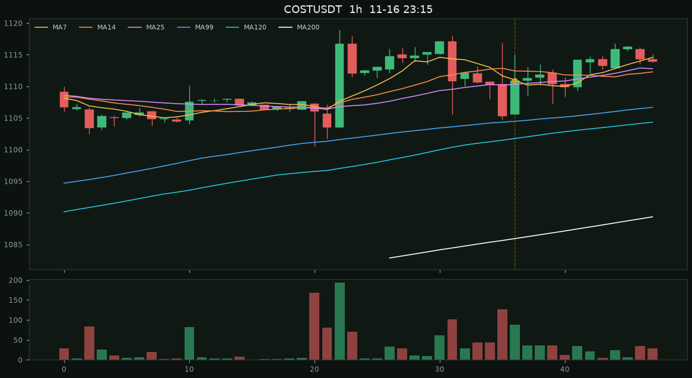
MA200上方 · 前24h +0.0% · 上影 3% · 寬度 0.218% · 量比 1.13× · 15m / 1h / 4h / 8h：-0.47% / -0.23% / -0.40% / +0.05% · 實體穿越
BSP 11-19 03:15 · 4h -0.58%
15 分圖 · 黃虛線是同時站上 7/14/25/99/120 的那根（圖上 MA200 只是對照）
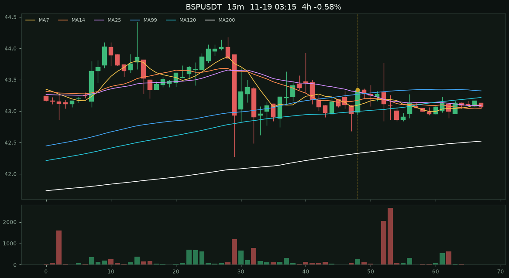
1 小時圖 · 黃虛線是上面那根 15 分所在的小時 K
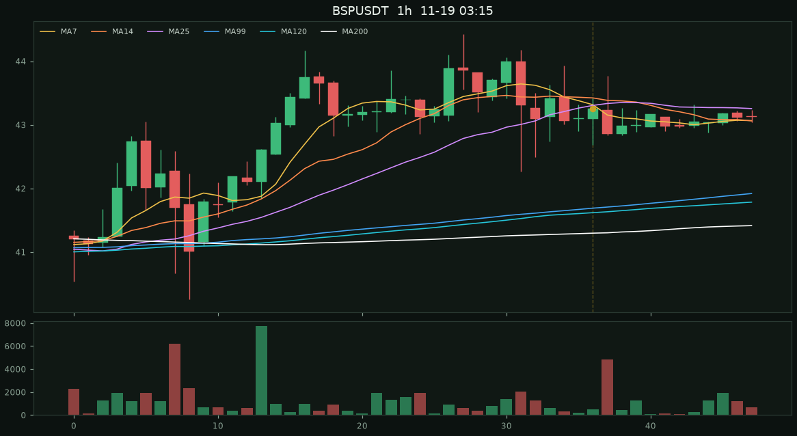
MA200上方 · 前24h +1.6% · 上影 0% · 寬度 0.775% · 量比 1.08× · 15m / 1h / 4h / 8h：-0.16% / -0.53% / -0.58% / -0.83% · 實體穿越
SONY 11-16 23:30 · 4h -0.77%
15 分圖 · 黃虛線是同時站上 7/14/25/99/120 的那根（圖上 MA200 只是對照）
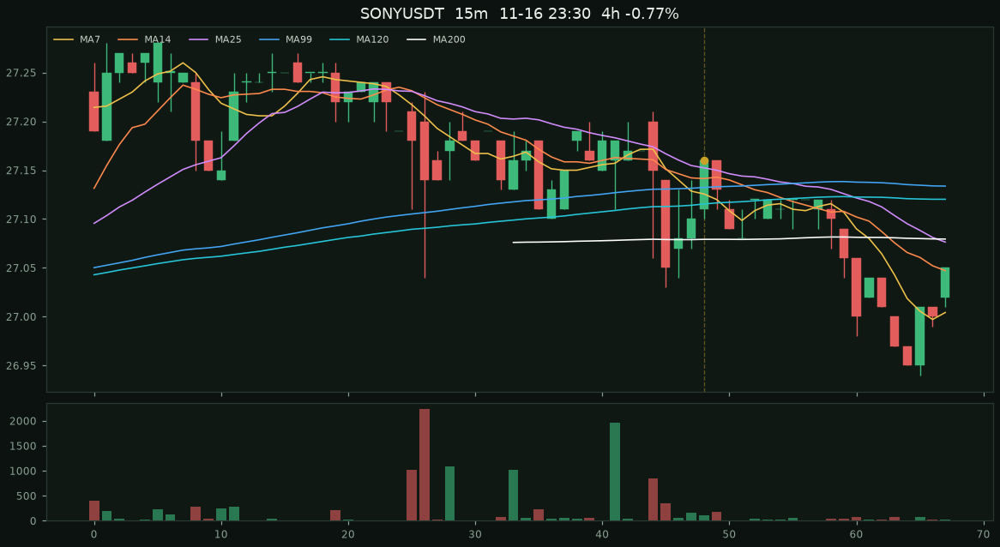
1 小時圖 · 黃虛線是上面那根 15 分所在的小時 K
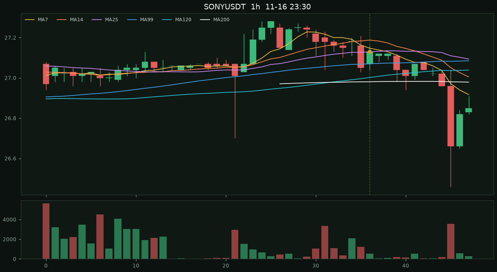
MA200上方 · 前24h +0.2% · 上影 0% · 寬度 0.150% · 量比 0.43× · 15m / 1h / 4h / 8h：-0.11% / -0.15% / -0.77% / -0.74% · 實體穿越
BMNR 11-16 23:30 · 4h -0.91%
15 分圖 · 黃虛線是同時站上 7/14/25/99/120 的那根（圖上 MA200 只是對照）
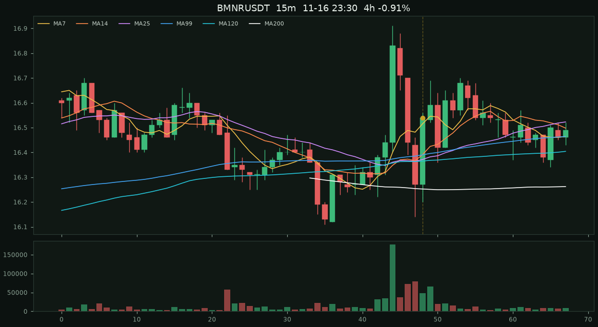
1 小時圖 · 黃虛線是上面那根 15 分所在的小時 K
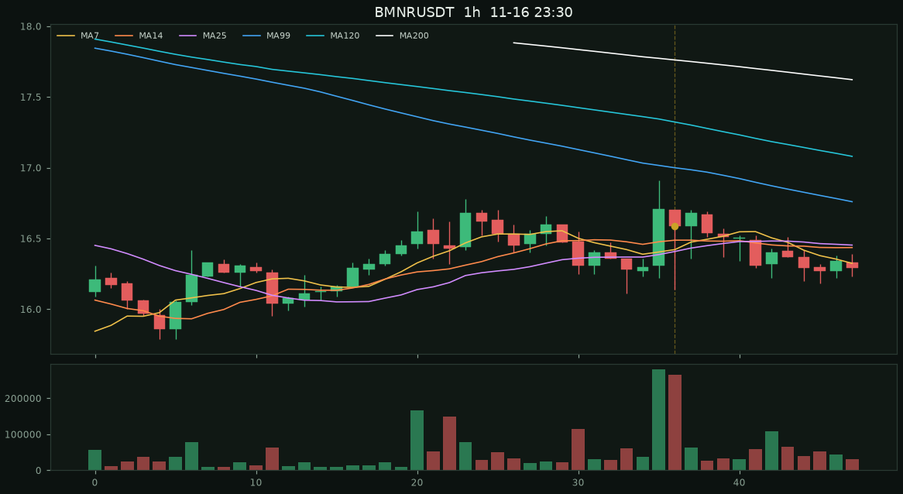
MA200上方 · 前24h +1.4% · 上影 6% · 寬度 0.724% · 量比 1.56× · 15m / 1h / 4h / 8h：+0.36% / +0.24% / -0.91% / -1.81% · 實體穿越
MSFT 11-16 23:45 · 4h -1.22%
15 分圖 · 黃虛線是同時站上 7/14/25/99/120 的那根（圖上 MA200 只是對照）
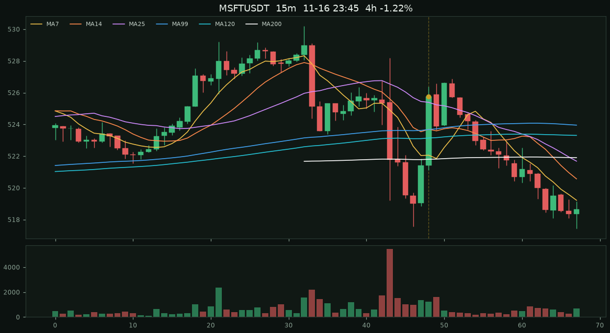
1 小時圖 · 黃虛線是上面那根 15 分所在的小時 K

MA200上方 · 前24h +0.3% · 上影 12% · 寬度 0.653% · 量比 0.97× · 15m / 1h / 4h / 8h：-0.38% / -0.24% / -1.22% / -1.06% · 實體穿越
SONY 11-22 14:00 · 4h +0.07%
15 分圖 · 黃虛線是同時站上 7/14/25/99/120 的那根（圖上 MA200 只是對照）
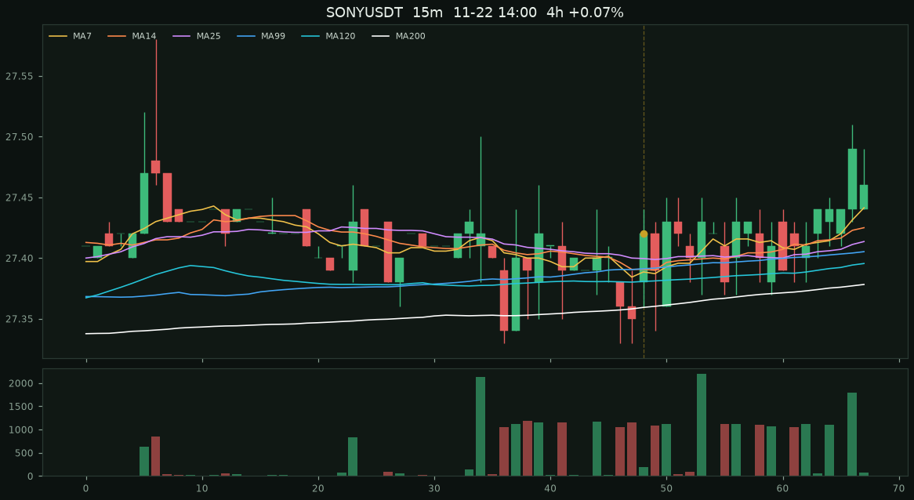
1 小時圖 · 黃虛線是上面那根 15 分所在的小時 K
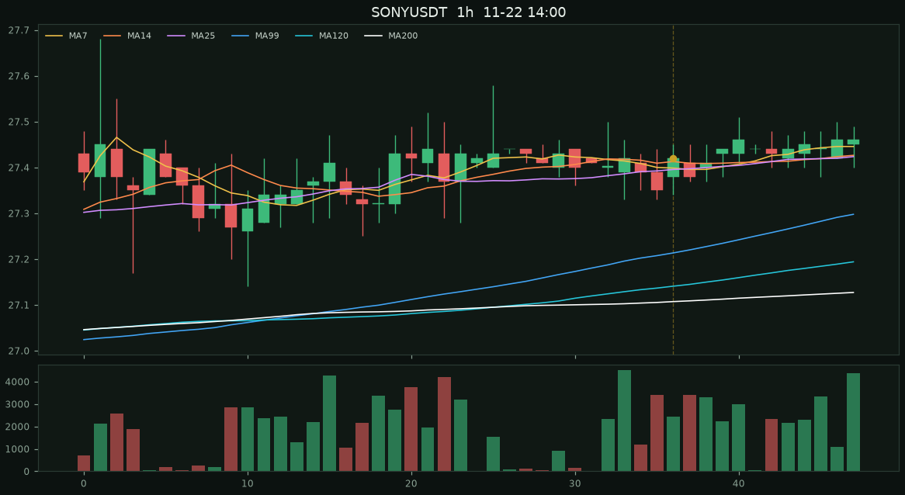
MA200上方 · 前24h +0.0% · 上影 25% · 寬度 0.072% · 量比 0.34× · 15m / 1h / 4h / 8h：-0.11% / -0.07% / +0.07% / +0.11% · 實體穿越
AGPU 11-23 03:00 · 4h +0.02%
15 分圖 · 黃虛線是同時站上 7/14/25/99/120 的那根（圖上 MA200 只是對照）
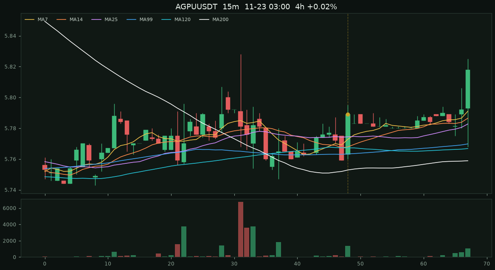
1 小時圖 · 黃虛線是上面那根 15 分所在的小時 K
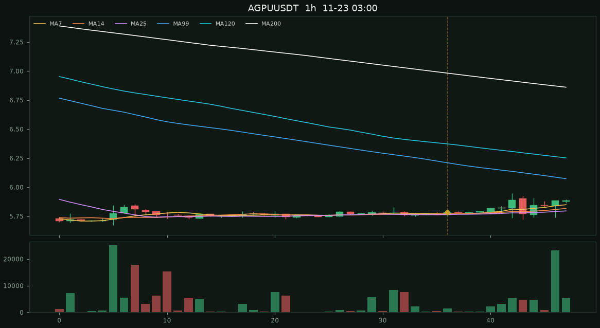
MA200上方 · 前24h +0.1% · 上影 17% · 寬度 0.193% · 量比 1.44× · 15m / 1h / 4h / 8h：+0.00% / -0.03% / +0.02% / +0.54% · 實體穿越
GPRO 11-18 15:45 · 4h +0.00%
15 分圖 · 黃虛線是同時站上 7/14/25/99/120 的那根（圖上 MA200 只是對照）
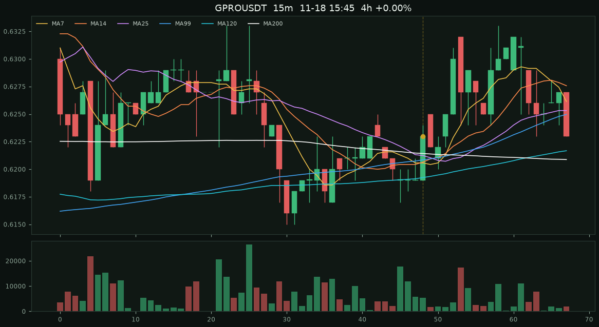
1 小時圖 · 黃虛線是上面那根 15 分所在的小時 K
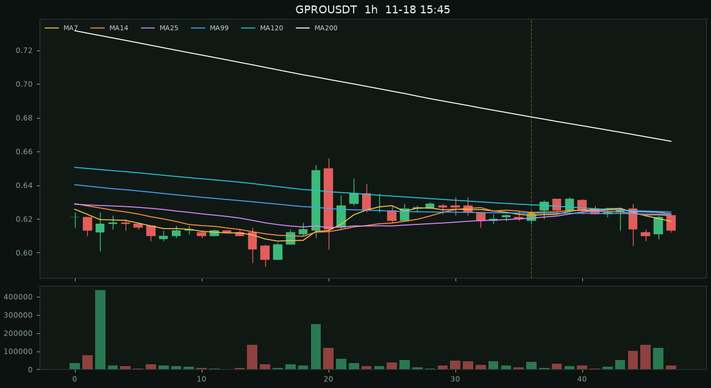
MA200上方 · 前24h +1.1% · 上影 20% · 寬度 0.353% · 量比 0.75× · 15m / 1h / 4h / 8h：-0.48% / +0.80% / +0.00% / -1.76% · 實體穿越
過濾對照
| 條件 | 筆數 | 幣數 | 下一根假突破 | 15m勝率 | 15m均 | 30m勝率 | 30m均 | 1h勝率 | 1h均 | 2h勝率 | 2h均 | 4h勝率 | 4h均 | 8h勝率 | 8h均 |
|---|---|---|---|---|---|---|---|---|---|---|---|---|---|---|---|
| 原始：一根K從帶下收到帶上 | 303 | 154 | 38.0% | 37.6% | -0.105% | 38.9% | -0.158% | 40.9% | -0.303% | 42.5% | -0.275% | 43.2% | -0.287% | 47.8% | -0.297% |
| 實體穿越（開在帶下、收在帶上） | 263 | 147 | 36.5% | 38.8% | -0.112% | 39.5% | -0.165% | 41.4% | -0.334% | 41.4% | -0.308% | 42.1% | -0.315% | 47.1% | -0.323% |
| 帶子寬度 ≤ 1.0% | 256 | 128 | 36.7% | 39.1% | -0.036% | 41.0% | -0.055% | 43.7% | -0.194% | 44.1% | -0.167% | 45.7% | -0.061% | 52.4% | +0.045% |
| 帶子寬度 ≤ 0.4% | 177 | 92 | 37.3% | 34.5% | -0.025% | 38.4% | -0.086% | 43.2% | -0.122% | 43.8% | -0.068% | 45.5% | -0.048% | 56.8% | +0.020% |
| 帶子寬度 > 1.0% | 47 | 43 | 44.7% | 29.8% | -0.479% | 27.7% | -0.719% | 25.5% | -0.893% | 34.0% | -0.856% | 29.8% | -1.511% | 23.4% | -2.149% |
| 放量 ≥ 1.5× | 183 | 124 | 32.8% | 36.6% | -0.146% | 38.3% | -0.249% | 44.3% | -0.416% | 42.6% | -0.413% | 39.9% | -0.557% | 43.7% | -0.598% |
| 實體 + 寬度≤1% + 放量≥1.5× | 130 | 94 | 31.5% | 39.2% | -0.053% | 40.0% | -0.103% | 46.9% | -0.294% | 43.8% | -0.317% | 42.3% | -0.268% | 48.5% | -0.065% |
| 站上 MA200 | 188 | 115 | 34.6% | 37.8% | -0.105% | 42.0% | -0.222% | 43.5% | -0.373% | 45.2% | -0.323% | 45.7% | -0.252% | 48.9% | -0.276% |
| 優化：站上MA200 + 前24h漲 + 8h冷卻 | 35 | 34 | 48.6% | 42.9% | -0.052% | 45.7% | -0.043% | 42.9% | -0.072% | 37.1% | -0.279% | 42.9% | -0.012% | 42.9% | -0.106% |
| 優化(推薦)：同上 + 寬度≤1% + 上影≤25% | 25 | 24 | 40.0% | 52.0% | +0.111% | 56.0% | +0.204% | 52.0% | +0.245% | 44.0% | +0.134% | 52.0% | +0.406% | 52.0% | +0.434% |
寬度 =（最高均線 / 最低均線 − 1）× 100%，用突破前一根的均線。假突破 = 進場那根 15 分收盤又跌回最高均線下方。
優化訊號表（依 4h 報酬排序，最多 80 筆）
| 時間 | 標的 | 進場 | 寬度 | 量比 | MA200 | 前24h | 上影 | 15m | 1h | 4h | 8h |
|---|---|---|---|---|---|---|---|---|---|---|---|
| 11-18 22:45 | AKAM | 86.88 | 0.82% | 6.23× | 上方 | +0.4% | 6% | +1.25% | +1.65% | +6.78% | +5.49% |
| 11-23 11:00 | HK0700 | 337.35 | 0.46% | 0.78× | 上方 | +0.2% | 11% | +0.34% | +0.55% | +2.10% | +1.84% |
| 11-23 11:00 | TENCENT | 43.13 | 0.45% | 1.00× | 上方 | +0.2% | 5% | +0.30% | +0.53% | +2.09% | +1.74% |
| 11-23 11:00 | TER | 215.02 | 0.90% | 1.45× | 上方 | +0.3% | 0% | +0.43% | +1.23% | +1.53% | +2.55% |
| 11-23 11:00 | AMAT | 316.15 | 0.60% | 0.45× | 上方 | +0.3% | 12% | +0.61% | +1.02% | +0.93% | +2.24% |
| 11-23 11:00 | SHAZ | 17.85 | 0.53% | 0.27× | 上方 | +0.5% | 11% | +0.17% | +0.73% | +0.73% | +3.70% |
| 11-23 11:00 | SPCX | 131.18 | 0.30% | 1.44× | 上方 | +0.1% | 0% | +0.34% | +0.52% | +0.67% | +0.34% |
| 11-23 11:00 | NOK | 7.116 | 0.48% | 1.48× | 上方 | +0.5% | 9% | +0.44% | +0.82% | +0.48% | +1.71% |
| 11-16 23:45 | COIN | 120.16 | 0.57% | 0.89× | 上方 | +0.3% | 19% | -1.00% | -0.05% | +0.42% | -0.54% |
| 11-18 23:00 | SNOW | 278.42 | 0.93% | 1.55× | 上方 | +0.8% | 8% | -0.74% | -0.87% | +0.37% | +1.07% |
| 11-22 23:15 | TMF | 29.15 | 0.12% | 1.17× | 上方 | +0.1% | 14% | -0.21% | -0.07% | +0.10% | +0.00% |
| 11-22 14:00 | SONY | 27.42 | 0.07% | 0.34× | 上方 | +0.0% | 25% | -0.11% | -0.07% | +0.07% | +0.11% |
| 11-23 03:00 | AGPU | 5.783 | 0.19% | 1.44× | 上方 | +0.1% | 17% | +0.00% | -0.03% | +0.02% | +0.54% |
| 11-18 15:45 | GPRO | 0.625 | 0.35% | 0.75× | 上方 | +1.1% | 20% | -0.48% | +0.80% | +0.00% | -1.76% |
| 11-23 11:00 | ZCSH | 21.01 | 0.61% | 0.42× | 上方 | +1.5% | 0% | +0.86% | +0.05% | -0.05% | +0.10% |
| 11-19 22:30 | BX | 117.44 | 0.46% | 9.60× | 上方 | +0.6% | 16% | +0.53% | +1.47% | -0.09% | -1.06% |
| 11-22 08:00 | MRK | 134.35 | 0.07% | 14.79× | 上方 | +0.0% | 17% | +0.00% | -0.16% | -0.14% | -0.25% |
| 11-16 22:15 | CSCO | 94.88 | 0.59% | 8.68× | 上方 | +0.0% | 16% | +1.62% | +0.05% | -0.32% | -0.26% |
| 11-17 05:15 | DIS | 118.7 | 0.29% | 0.58× | 上方 | +0.7% | 0% | +0.05% | -0.17% | -0.33% | -0.38% |
| 11-16 23:15 | COST | 1114.3 | 0.22% | 1.13× | 上方 | +0.0% | 3% | -0.47% | -0.23% | -0.40% | +0.05% |
| 11-19 03:15 | BSP | 43.34 | 0.78% | 1.08× | 上方 | +1.6% | 0% | -0.16% | -0.53% | -0.58% | -0.83% |
| 11-16 23:30 | SONY | 27.16 | 0.15% | 0.43× | 上方 | +0.2% | 0% | -0.11% | -0.15% | -0.77% | -0.74% |
| 11-16 23:30 | BMNR | 16.53 | 0.72% | 1.56× | 上方 | +1.4% | 6% | +0.36% | +0.24% | -0.91% | -1.81% |
| 11-16 23:45 | MSFT | 525.89 | 0.65% | 0.97× | 上方 | +0.3% | 12% | -0.38% | -0.24% | -1.22% | -1.06% |
| 11-20 00:30 | XBI | 146.93 | 0.16% | 0.49× | 上方 | +0.2% | 14% | -0.87% | -0.97% | -1.35% | -1.95% |